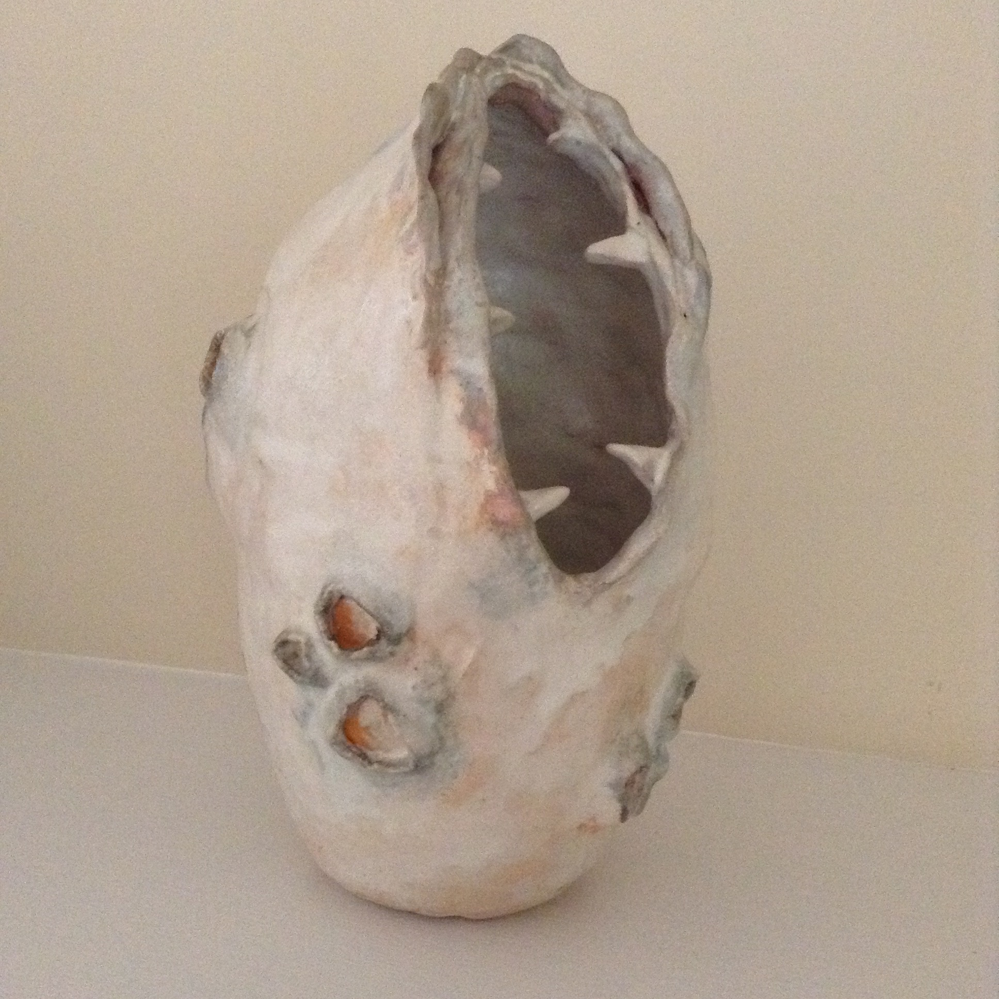
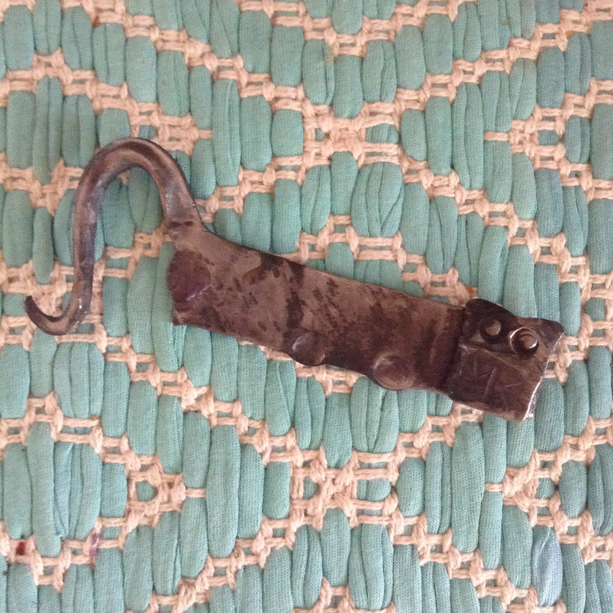

Art and Stuff

Carolina Mountain Stool / Caned Chair Seat

Poem Walking Stick / Woodburned
Poem Walking Stick Detail

Spirit Bison / Needle Felted

Dentata Sculpture / Ceramic
Dentata Sculpture Detail
Rose / Bead Weaving (Ronald Midkiff pattern)
Banana Lady / Mosaic
Virgina Almost-Reel / Quilted

Kitty Bottle Opener / Blacksmithed originial design

Spirit Gnome / Woodturned and Woodburned
Koi Fish / Enamel
Soap Medly / Soap
Candy Pinwheels / Quilted
Kathryn Webber Dyed Warp Runner/ Weaving
Coffee Cup / Adobe Illustrator
Mediums I've worked with
- Quilting (extensive)
- Sewing
- Baking (especially Pie!)
- Needle Felting
- Wet Felting
- Knitting (extensive / Ravelry)
- Crochet
- Spinning (especially walking wheel)
- Soap Making
- Ceramics
- Bonsai
- Floral Design
- Embroidery (especially cross stitch)
- Macrame
- Book Binding
- Watercolor
- Simple printmaking (white line, gelatin, botanical)
- Simple calligraphy
- Basket Weaving (with commercial basket reed... I tried split-Oak and it did not end well.)
- Chair Caning
- Woodturning
- Blacksmithing
- Chip Carving
- Stained Glass
- Kalidescopes
- Weaving
- Inkle Weaving
- Bead Weaving (on a beading loom)
- Woodworking (especially hardwood cuttingboards)
- Glass Beads
- Enamel
- Mosaic
- Woodburning
- Adobe Illustrator